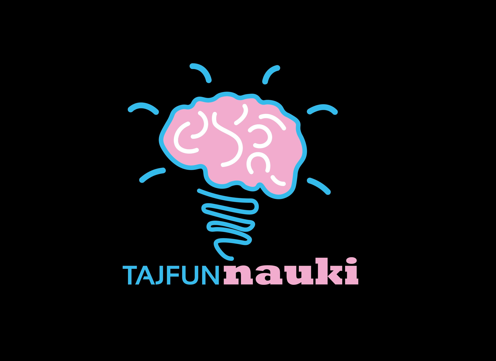

Jeśli masz tak, że uczysz się, a potem niewiele zostaje — ten eksperyment pokaże, co możesz z tym zrobić.
Przez 4 tygodnie sprawdzisz 3 sposoby nauki i zobaczysz, który działa najlepiej u Ciebie.
Przygotuj kartki i długopis.
Najlepiej, żeby kartki były małe — np. A6, pół kartki z zeszytu.
Na jednej stronie będziesz pisać pytanie.
Na drugiej: odpowiedź.
Zaczynamy. To będzie mały eksperyment.
Przejdź przez kolejne kroki. Zrób to do końca — tylko wtedy zobaczysz efekt.
Weź materiał, którego i tak musisz się nauczyć. Coś, co jesteś w stanie spokojnie opracować w około 30–60 minut. Nie musi być idealnie.
Zastanów się:
Czego chcesz się z tego nauczyć?
Zapisz jedno zdanie.
Podziel materiał na dwie podobne części.
Nie musi być równo. Nie zatrzymuj się na tym.
Za chwilę zaczniesz.
To może wydawać się trudniejsze niż czytanie. Właśnie dlatego to działa — bo zmusza do sięgania do pamięci.
W części B:
Zrób szybki przegląd:
Przeczytaj raz. To wystarczy.
Za chwilę zaczniesz.
Spokojnie — wszystko w Twoim tempie.
Zrób szybki reset:
Odłóż telefon lub ekran poza zasięg ręki i wzroku.
Na razie nie zobaczysz pełnego efektu. Najważniejszy jest powrót.
Do tego materiału jeszcze wrócisz. Ustaw przypomnienie na za dwa dni. To część tego eksperymentu — wtedy sprawdzasz, co naprawdę zostało w głowie.
Jeśli uczysz się czegoś jeszcze w tym tygodniu — możesz użyć tego sposobu.
